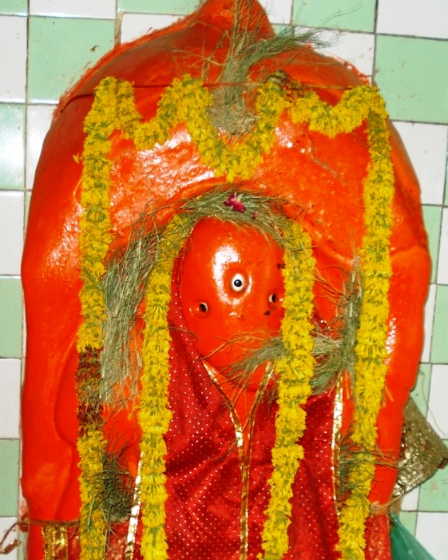

<?xml version="1.0" encoding="UTF-8"?><rss version="2.0"
	xmlns:content="http://purl.org/rss/1.0/modules/content/"
	xmlns:wfw="http://wellformedweb.org/CommentAPI/"
	xmlns:dc="http://purl.org/dc/elements/1.1/"
	xmlns:atom="http://www.w3.org/2005/Atom"
	xmlns:sy="http://purl.org/rss/1.0/modules/syndication/"
	xmlns:slash="http://purl.org/rss/1.0/modules/slash/"
	>

<channel>
	<title>Gana Nath Vinayak &#8211; Varanasi Temples</title>
	<atom:link href="index.html" rel="self" type="application/rss+xml" />
	<link>../../../../index.html</link>
	<description>Temples of Varanasi as referred to in Kashi Khand</description>
	<lastBuildDate>Thu, 19 Jun 2025 05:16:46 +0000</lastBuildDate>
	<language>en-US</language>
	<sy:updatePeriod>hourly</sy:updatePeriod>
	<sy:updateFrequency>1</sy:updateFrequency>
	<generator>https://wordpress.org/?v=4.6.29</generator>
	<item>
		<title>GANA NATH VINAYAK</title>
		<link>../../../../vinayak-temples/gana-nath-vinayak/index.html</link>
		<pubDate>Sat, 08 May 2010 02:53:30 +0000</pubDate>
		<dc:creator><![CDATA[admin]]></dc:creator>
				<category><![CDATA[Gana Nath Vinayak]]></category>
		<category><![CDATA[Vinayak Temples]]></category>
		<category><![CDATA[gananath]]></category>

		<guid isPermaLink="false">../../../../p=162.html</guid>
		<description><![CDATA[Gana Nath Vinayak is located at  Ck.37/1, Dhundhi Raj Galli, near Visweshwar temple. If a devotee takes a left turn just before Dundhi Raj Vinayak towards Gyan Vapi and walk for a few yards he will reach the shop of reputed Jewellers named Vijay Jewellers. Gana Nath Vinayak is located just outside the shop on [&#8230;]]]></description>
				<content:encoded><![CDATA[<p>Gana Nath Vinayak is located at  Ck.37/1, Dhundhi Raj Galli, near Visweshwar temple. If a devotee takes a left turn just before Dundhi Raj Vinayak towards Gyan Vapi and walk for a few yards he will reach the shop of reputed Jewellers named Vijay Jewellers. Gana Nath Vinayak is located just outside the shop on the main Gully.  Devotees can travel upto Chowk by rickshaw and walk on foot to this place. Alternatively, after Banspatak, just before New Kashi Vishwanath Dham, there is a small right turning.  This path will take the devotees to this place.</p>
<p>Prayers to Gana Nath Vinayak will yield success and all round happiness in life.</p>
<p></p>
<p style="text-align: center;"><strong>(GANA NATH VINAYAK)</strong></p>
<p><strong>Please watch our YouTube Video about Gana Nath Vinayak at following Link</strong></p>
<p><a href="https://www.youtube.com/watch?v=l-35TQ5emoQ&amp;t=13s">https://www.youtube.com/watch?v=l-35TQ5emoQ&amp;t=13s</a></p>
<p>&nbsp;</p>
<p>TYPES OF POOJA</p>
<p>The place of worship is open practically throughout and devotees can perform pooja by themselves.</p>
]]></content:encoded>
			</item>
	</channel>
</rss>
